Each row is one detection, marked with a red crosshair.
The Sentinel-2 pair is your evidence of change. It is only 10 m per pixel and looks blurry, but its two dates match the detection window exactly. The sub-metre image is far sharper but undated, so it answers only what is this place — plantation rows, quarry, riverbed, settlement — not whether anything changed.
Sub-metre dated imagery was attempted via Esri Wayback and is not available here: both the 2025 and 2026 releases return the same acquisition, because Esri has not re-flown this area between them. Showing them as a before/after pair would invite the conclusion that nothing changed, which the imagery cannot support either way, so only one copy is shown and it is labelled undated.
The commonest false positive: a bare patch that was
already there in the before image. If the crosshair sits on ground bare
in both Sentinel-2 chips, that is a false_positive however obvious
the patch looks. Also watch for plantations — regular rows or sharp
rectangular blocks in the sharp image — which are not forest loss.
The commonest false positive here: a bare patch that was
already there in the before image. If the crosshair sits on ground that
was bare in both years, that is a false_positive however obvious the
patch looks. Also watch for plantations — unnaturally regular rows or sharp
rectangular blocks — which are not forest loss.
Record true_positive, false_positive
or unclear against each id in the worksheet CSV. Use
unclear freely — it is excluded from the score, and guessing
corrupts the number you are trying to measure.
21 of 21 have both dated chips.
0a066910b978d024
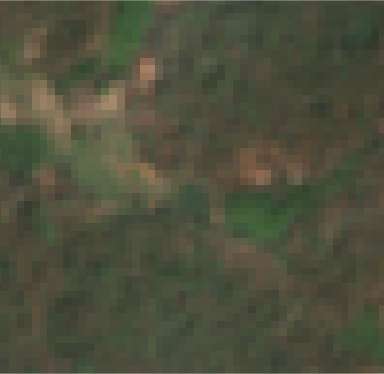
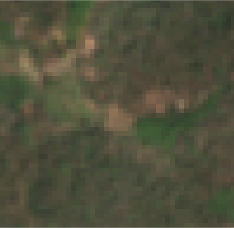
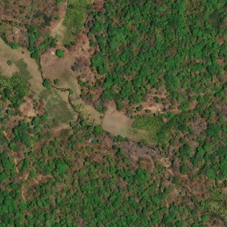
1267bc35f5a15016
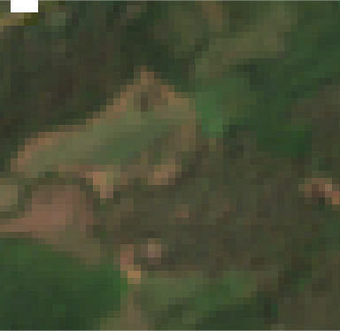
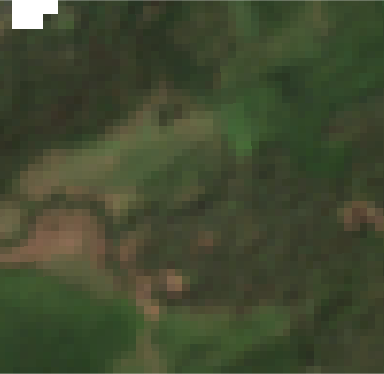
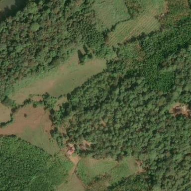
132b6a4c6be848f9
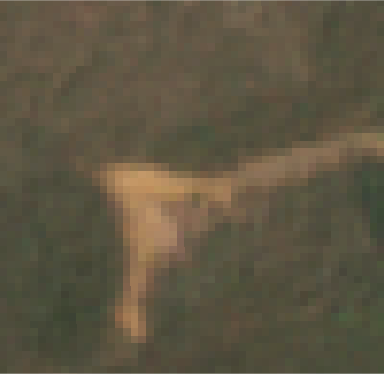
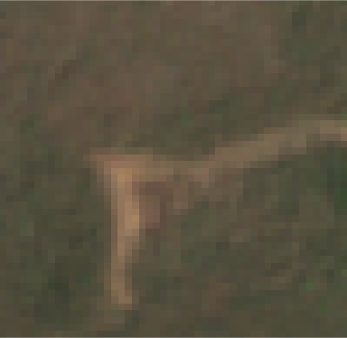
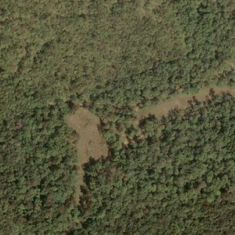
140000e5cc048eb3
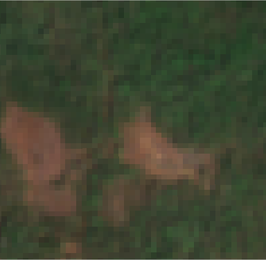
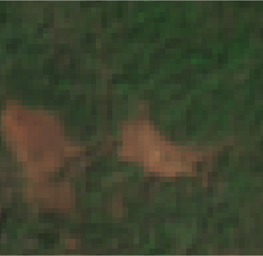
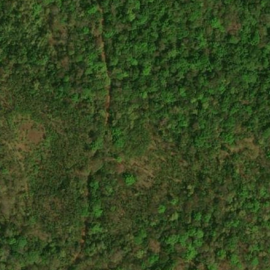
1ac2c78d08f4a1a7
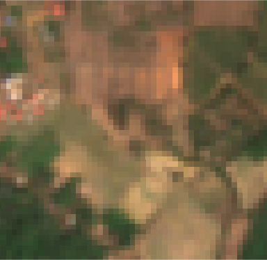
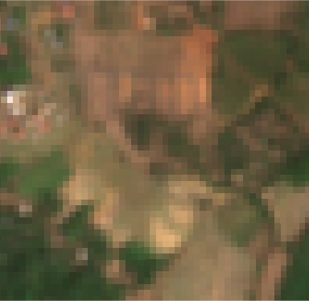
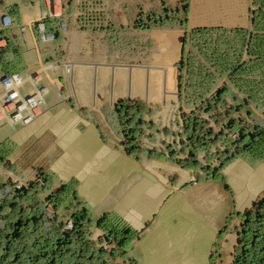
3d86a73bf9b62e89
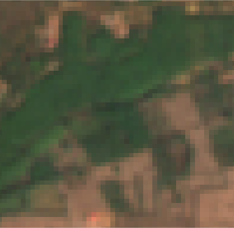
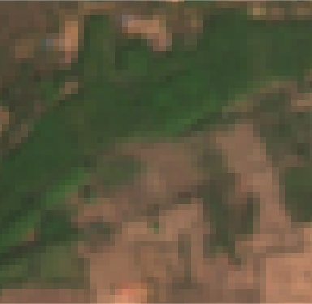
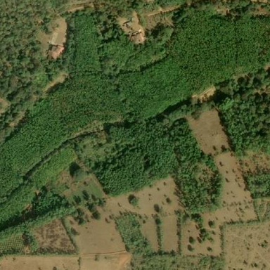
4554261e17d45417
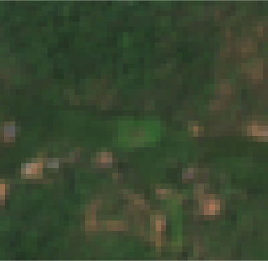
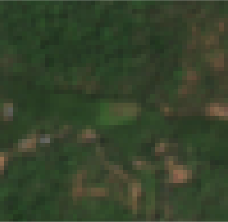
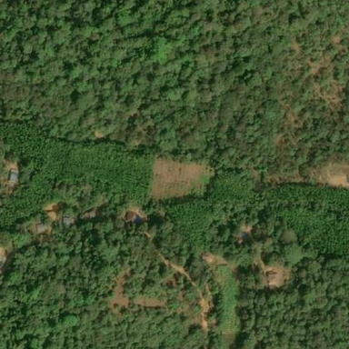
4af509dc5d4414b6
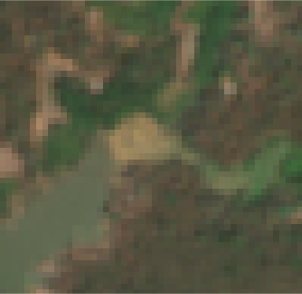
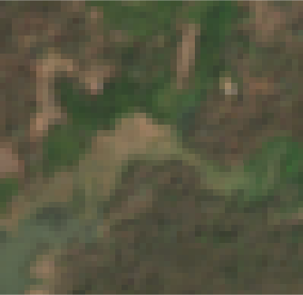
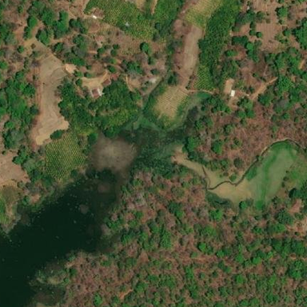
5c5807882e1b25da
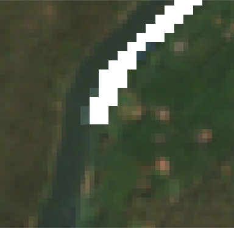
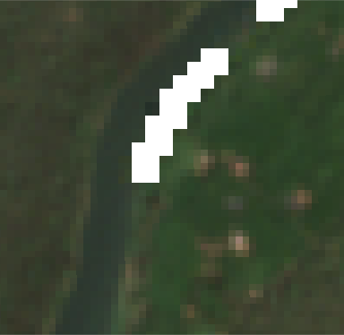
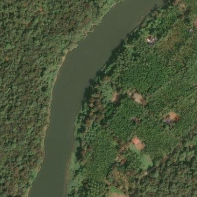
6888a59839fdcbd1
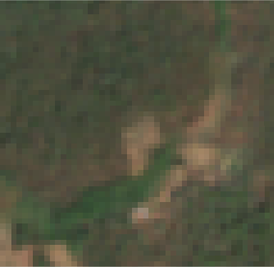
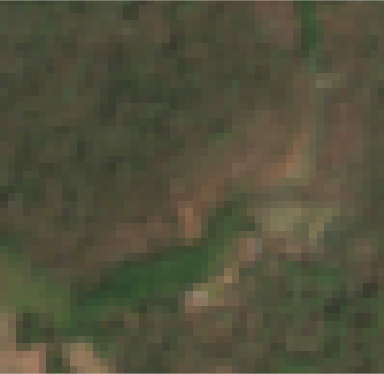
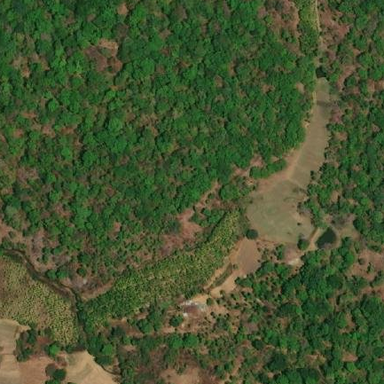
6cd76c5572a67a3d
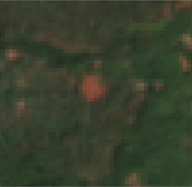
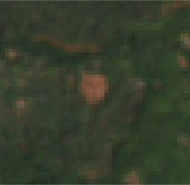
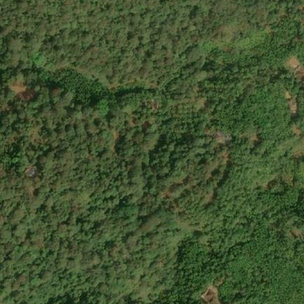
6d08db5bbceb3bcb
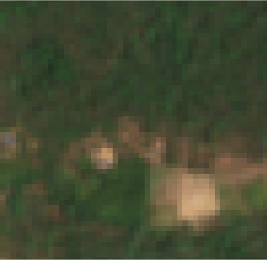
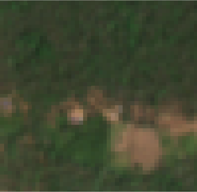
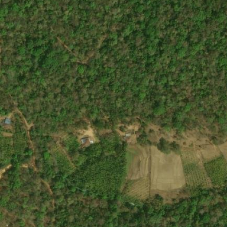
712f37b03d3cd836
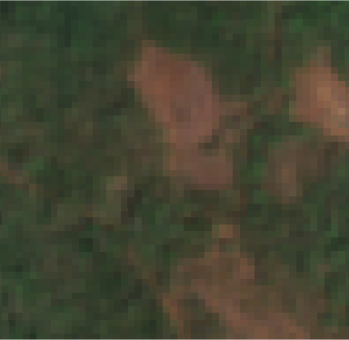
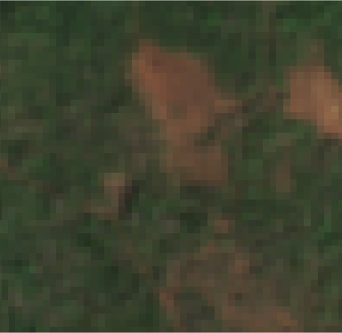
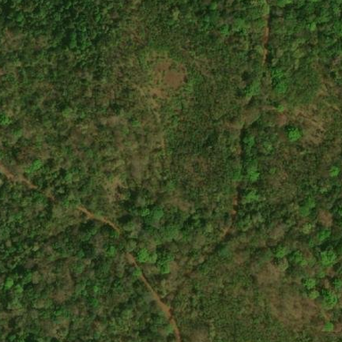
82f1b42fa61e424e
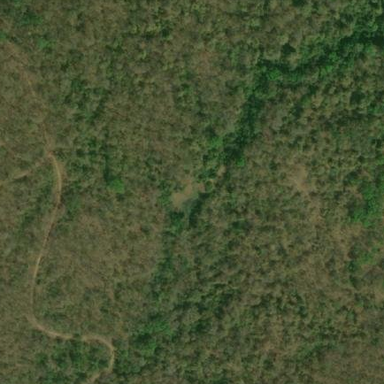
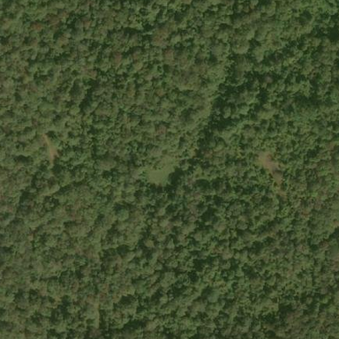
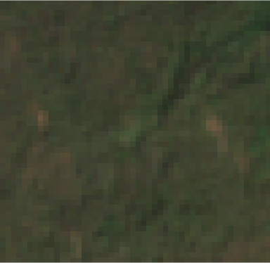
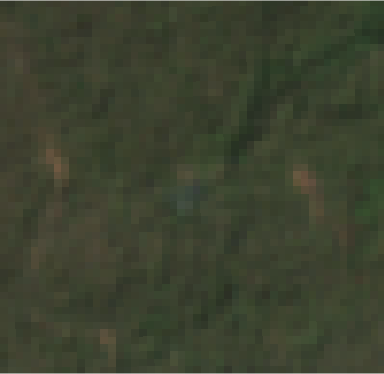
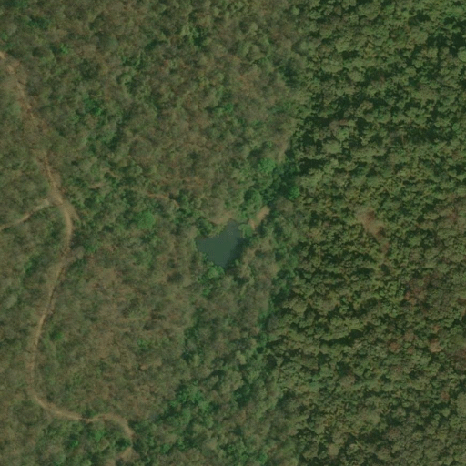
95f11e59338ab270
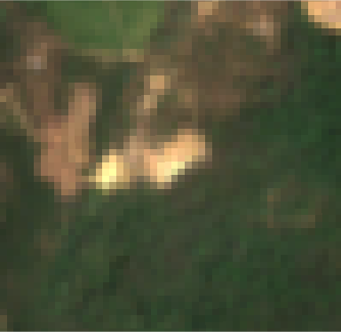
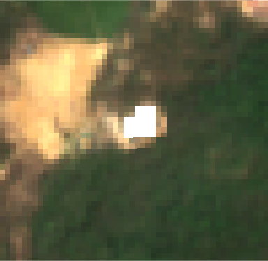
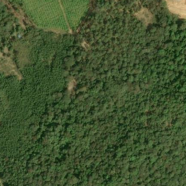
9b1afaba01501b6b
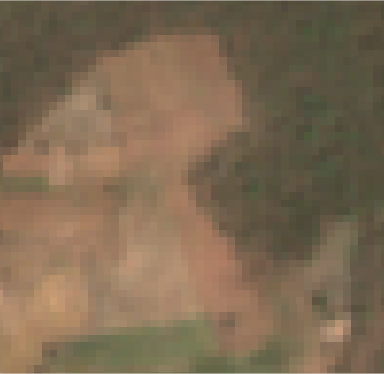
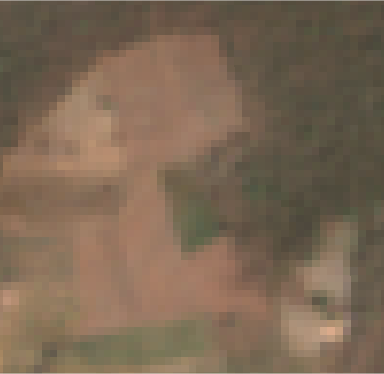
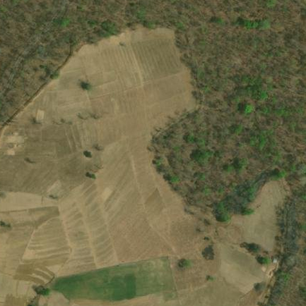
a4694b3023a461fc
b45d35dd21808a5b
ef991681ed5bf326
f28b3ab4ec6d9ce0
f557b1bad8730633